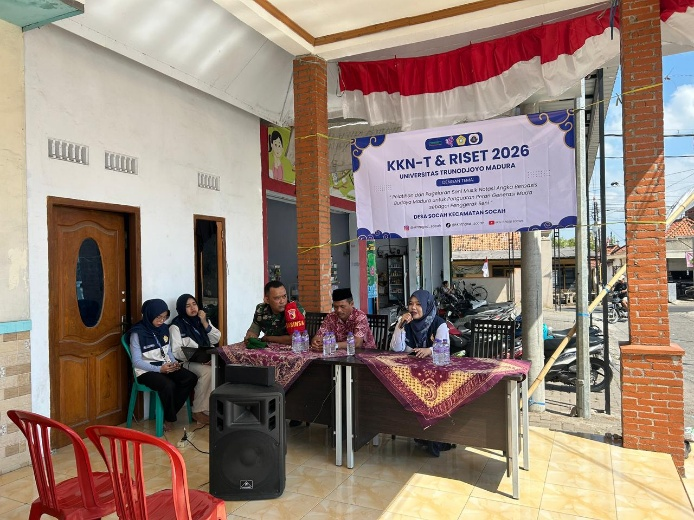
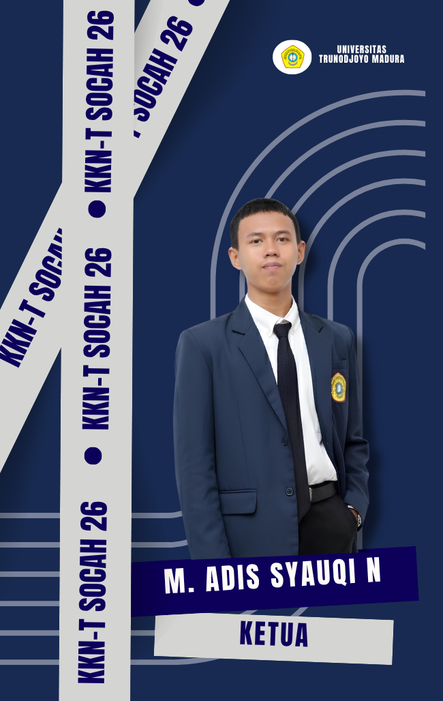
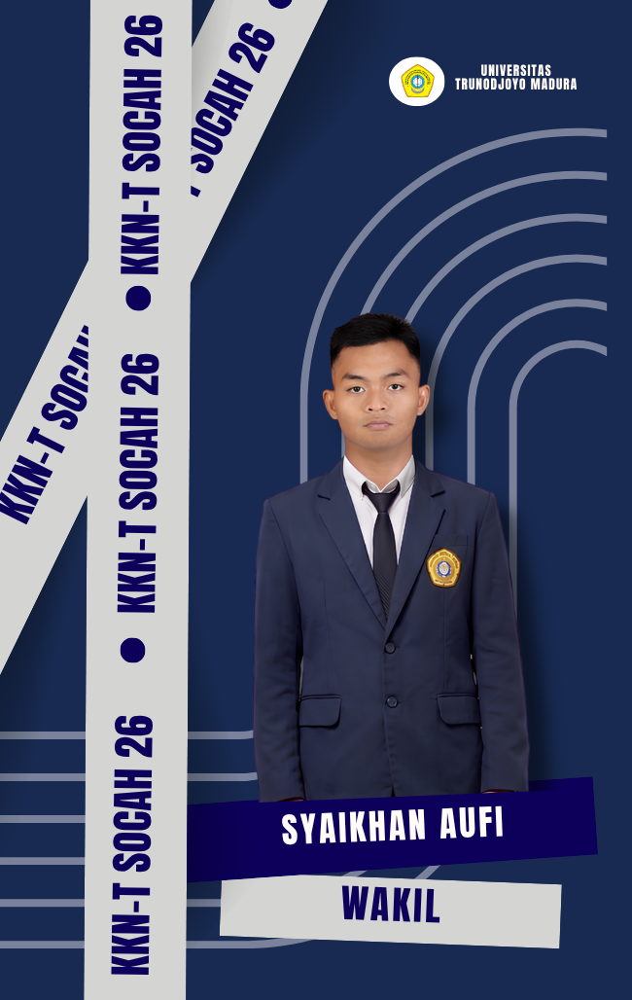
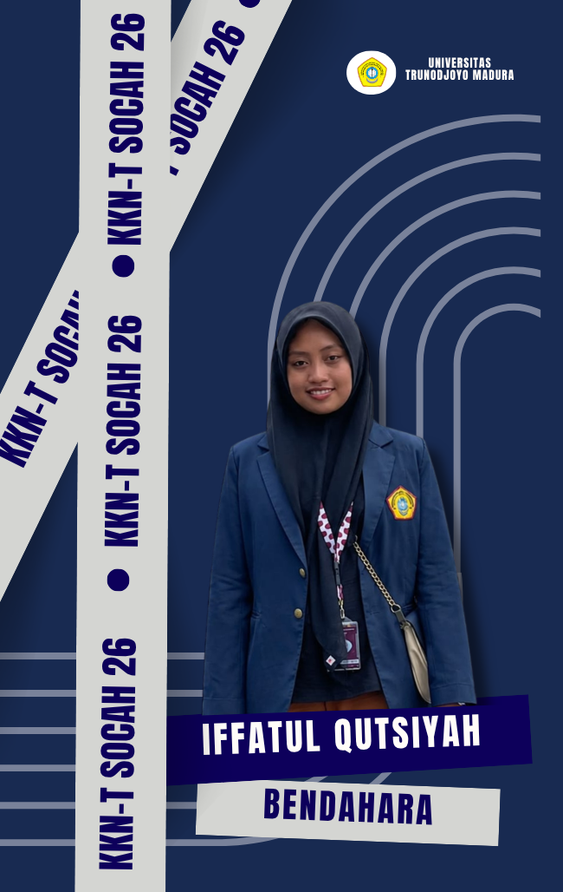

3-12 November 2026 · Pendidikan & Budaya
Mengenalkan Lagu Daerah Madura di Sekolah
Siswa SDN Socah 2 dan SDN Socah 4 berlatih lagu Sewel Socah dan lagu budaya Madura melalui kegiatan seni musik KKNT.

"Membangun Bersama, Berdaya Selamanya"
Rangkaian kegiatan lapangan KKNT Desa Socah periode Agustus-November 2026.
| No. | Tanggal | Keterangan |
|---|---|---|
| 1 | 31 Agustus 2026 | Pembukaan KKN-T & riset Desa Socah secara tertutup, dihadiri perangkat desa, dosen pembimbing lapangan, dan perwakilan keamanan Desa Socah. |
| 2 | 7 September 2026 | Koordinasi lanjutan kepada kepala desa dan kepala sekolah terkait program kerja. |
| 3 | 7 September 2026 | Peninjauan lokasi buku desa bagian 1: tambak udang, sumber air Jokotole Kauman, dan dock perahu Kauman. |
| 4 | 8 September 2026 | Pertemuan perdana pelatihan musik notasi angka di SDN Socah 4 untuk 14 siswa: menghafal Do, Re, Mi dan instrumen awal. |
| 5 | 10 September 2026 | Pertemuan perdana pelatihan musik notasi angka di SDN Socah 2 untuk 20 siswa: menghafal Do, Re, Mi dan instrumen awal. |
| 6 | 12 September 2026 | Senam bersama dan mengajar kelas 4 Bahasa Madura atas permintaan guru. |
| 7 | 14 September 2026 | Mengajar PAUD Mawar dengan tema mengenal nama buah berdasarkan abjad serta membuat kolase buah. |
| 8 | 15 September 2026 | Pertemuan kedua pelatihan musik notasi angka di SDN Socah 4. |
| 9 | 16 September 2026 | Mengajar PAUD Mawar tentang mengenal warna, doa sehari-hari, dan macam-macam pekerjaan. |
| 10 | 17 September 2026 | Pertemuan kedua pelatihan seni musik notasi angka di SDN Socah 2 melalui lagu Ibu Kartini dan Tandu Majheng. |
| 11 | 21 September 2026 | Mengajar PAUD Mawar tentang mengenal warna, doa sehari-hari, macam-macam sayur, pembiasaan, dan mewarnai. |
| 12 | 22 September 2026 | Pertemuan ketiga pelatihan notasi angka berbasis Bahasa Madura di SDN Socah 4 melalui lagu Ibu Kita Kartini dan Solasol. |
| 13 | 23 September 2026 | Mengajar PAUD Mawar tentang mengenal buah-buahan, pembiasaan, dan mewarnai buah. |
| 14 | 24 September 2026 | Pertemuan ketiga pelatihan notasi angka berbasis Bahasa Madura di SDN Socah 2 melalui lagu Ibu Kita Kartini dan Solasol. |
| 15 | 28 September 2026 | Rapat persiapan sosialisasi di sekolah. |
| 16 | 29 September 2026 | Mengajar PAUD Mawar tentang tumbuhan lingkungan sekitar dan pembiasaan. |
| 17 | 1 Oktober 2026 | Rapat penyampaian progress KKNT dan riset bersama dosen pembimbing lapangan di RKBB. |
| 18 | 1 Oktober 2026 | Rapat evaluasi bulanan. |
| 19 | 2 Oktober 2026 | Mengajar seni rupa berupa kegiatan menggambar di SDN Socah 4. |
| 20 | 5-10 Oktober 2026 | Kegiatan sekolah ditunda karena pelaksanaan Ujian Tengah Semester (UTS). |
| 21 | 5 Oktober 2026 | Pendataan tempat-tempat di Desa Socah untuk penyusunan buku desa. |
| 22 | 6 Oktober 2026 | Kerja kelompok penyusunan buku desa mencapai progress 35% dan evaluasi program kerja lanjutan. |
| 23 | 7 Oktober 2026 | Kerja kelompok internal menyusun lagu berbasis notasi angka Bahasa Madura. |
| 24 | 8 Oktober 2026 | Penyusunan laporan kemajuan kegiatan. |
| 25 | 13 Oktober 2026 | Pelatihan siswa SDN Socah 4 menggunakan angklung untuk lagu Ibu Kita Kartini. |
| 26 | 15 Oktober 2026 | Pelatihan siswa SDN Socah 2 menggunakan angklung untuk lagu Ibu Kita Kartini. |
| 27 | 27 Oktober 2026 | Menghafal lagu Sewel Socah di SDN Socah 4. |
| 28 | 28 Oktober 2026 | Kerja bakti di Desa Socah dan penyerahan media tanam kangkung. |
| 29 | 29 Oktober 2026 | Menghafal lagu Sewel Socah di SDN Socah 2. |
| 30 | 3 November 2026 | Menghafal lagu budaya Madura Sewel Socah di SDN Socah 2. |
| 31 | 4 November 2026 | Mengajar PAUD Mawar tentang profesi dokter dan tugasnya. |
| 32 | 9 November 2026 | Kegiatan perpisahan dengan anak PAUD. |
| 33 | 10 November 2026 | Menyetorkan lagu Sewel Socah dan lagu budaya Madura, serta membuat es krim di SDN Socah 4. |
| 34 | 12 November 2026 | Menyetorkan lagu Sewel Socah dan lagu budaya Madura di SDN Socah 2. |
| 35 | 17 November 2026 | Pembuatan kerajinan berbasis clay. |
Cerita kegiatan dan pembelajaran KKNT bersama masyarakat Desa Socah.
3-12 November 2026 · Pendidikan & Budaya
Siswa SDN Socah 2 dan SDN Socah 4 berlatih lagu Sewel Socah dan lagu budaya Madura melalui kegiatan seni musik KKNT.
September-November 2026 · Pendidikan
Kegiatan belajar mencakup pengenalan buah, warna, tumbuhan, pembiasaan sehari-hari, hingga mengenal profesi dokter.
28 Oktober 2026 · Lingkungan
Tim KKNT bersama masyarakat melaksanakan kerja bakti di Desa Socah dan menyerahkan media tanam kangkung.
Tempat kami merekam jejak langkah, senyum warga, dan setiap momen pengabdian selama di Desa Socah.


M. ADIS SYAUQI N
SYAIKHAN AUFI A. SITI MAGHFIROH
SITI MAGHFIROH

IFFATUL QUTSIYAH AISYAH PUTRI PRIMADINI
AISYAH PUTRI PRIMADINI
 MAYA AULIA R
MAYA AULIA R
Memiliki pertanyaan terkait program kerja kami atau ingin berkolaborasi? Jangan ragu untuk menghubungi kami.
Hubungi via WhatsApp (0851-5608-0526)Asisten KKNT Trunojoyo